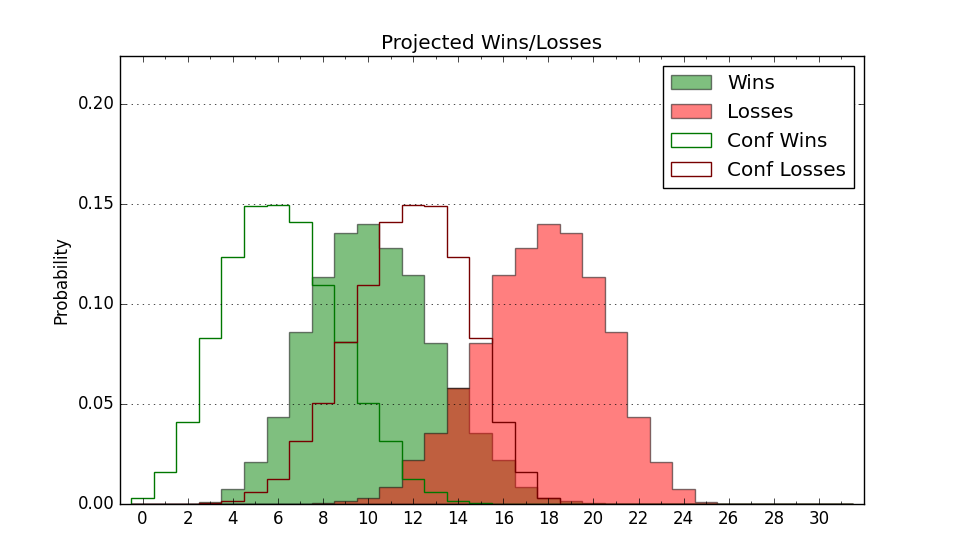

| Home | Game Probabilities | Conferences | Preseason Predictions | Odds Charts | NCAA Tournament |
| City: | St. George, Utah | |
| Conference: | Western (1st)
| |
| Record: | 0-0 (Conf) 3-4 (Overall) | |
| Ratings: | Comp.: -7.7 (254th) Net: -5.9 (234th) Off: 99.9 (193rd) Def: 105.8 (266th) SoR: 0.7 (217th) |
| Remaining | ||||||
|---|---|---|---|---|---|---|
| Date | Opponent | Win Prob | Pred. | |||
| 12/1 | @ Utah St. (35) | 4.6% | L 63-85 | |||
| 12/3 | @ Weber St. (262) | 36.5% | L 70-74 | |||
| 12/22 | Lindenwood (276) | 68.9% | W 75-69 | |||
| 12/29 | UT Rio Grande Valley (287) | 70.6% | W 81-74 | |||
| 12/31 | @ Utah Valley (161) | 19.5% | L 64-74 | |||
| 1/5 | @ California Baptist (207) | 26.5% | L 64-71 | |||
| 1/12 | Stephen F. Austin (147) | 42.4% | L 73-75 | |||
| 1/14 | Sam Houston St. (77) | 25.3% | L 63-71 | |||
| 1/18 | @ Grand Canyon (107) | 13.0% | L 58-71 | |||
| 1/21 | New Mexico St. (137) | 40.1% | L 70-73 | |||
| 1/26 | @ Tarleton St. (116) | 13.9% | L 64-77 | |||
| 1/28 | @ Abilene Christian (241) | 33.0% | L 69-74 | |||
| 2/2 | Utah Valley (161) | 45.2% | L 69-70 | |||
| 2/4 | Southern Utah (178) | 49.1% | L 75-76 | |||
| 2/8 | @ Seattle (101) | 12.3% | L 64-78 | |||
| 2/11 | Tarleton St. (116) | 35.5% | L 69-73 | |||
| 2/17 | @ Southern Utah (178) | 22.0% | L 71-80 | |||
| 2/23 | @ UT Rio Grande Valley (287) | 41.3% | L 76-79 | |||
| 2/25 | @ UT Arlington (302) | 44.4% | L 65-67 | |||
| 3/1 | Seattle (101) | 32.2% | L 68-73 | |||
| 3/3 | Grand Canyon (107) | 33.7% | L 62-67 | |||
| Previous | Game Score | |||||
| Date | Opponent | Win Prob | Result | Off | Def | Net |
| 11/7 | @Nevada (74) | 8.8% | L 71-84 | 7.3 | -2.3 | 5.0 |
| 11/12 | Cal St. Northridge (282) | 70.3% | W 69-63 | -6.3 | 8.1 | 1.8 |
| 11/14 | @Washington (135) | 16.2% | L 67-78 | 9.2 | -12.9 | -3.8 |
| 11/17 | @Arizona (19) | 2.6% | L 77-104 | 9.1 | -9.7 | -0.6 |
| 11/19 | @Idaho (342) | 59.2% | W 81-71 | 13.7 | -0.9 | 12.8 |
| 11/25 | @North Dakota (316) | 47.8% | L 52-67 | -27.5 | 1.7 | -25.8 |
| 11/26 | (N) Cal St. Fullerton (222) | 44.2% | W 66-60 | 18.5 | 6.2 | 24.7 |
| Stats & Trends | |||||
|---|---|---|---|---|---|
| Current | Day | Week | Month | Season | |
| Composite | -7.7 | +0.0 | +0.6 | +2.4 | +2.4 |
| Comp Rank | 254 | -1 | +4 | +30 | +30 |
| Net Efficiency | -5.9 | +0.1 | -0.3 | -- | -- |
| Net Rank | 234 | +4 | -8 | -- | -- |
| Off Efficiency | 99.9 | -0.1 | -10.2 | -- | -- |
| Off Rank | 193 | -2 | -137 | -- | -- |
| Def Efficiency | 105.8 | +0.2 | +9.9 | -- | -- |
| Def Rank | 266 | +3 | +69 | -- | -- |
| SoS Rank | 152 | +3 | -23 | -- | -- |
| Exp. Wins | 10.3 | -0.0 | +0.4 | +0.9 | +0.9 |
| Exp. Conf Wins | 6.2 | +0.0 | +0.1 | +0.1 | +0.1 |
| Conf Champ Prob | 0.3 | -0.1 | -0.3 | -0.5 | -0.5 |

| Advanced Stats | ||
|---|---|---|
| Stat | Value | Rank |
| Off Eff FG % | 0.478 | 236 |
| Off Ast Ratio | 0.126 | 265 |
| Off ORB% | 0.323 | 63 |
| Off TO Rate | 0.173 | 227 |
| Off FT Ratio | 0.382 | 69 |
| Def Eff FG % | 0.561 | 320 |
| Def Ast Ratio | 0.172 | 332 |
| Def ORB% | 0.261 | 167 |
| Def TO Rate | 0.180 | 97 |
| Def FT Ratio | 0.265 | 99 |